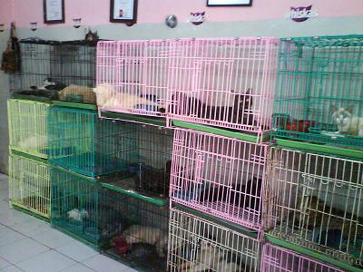
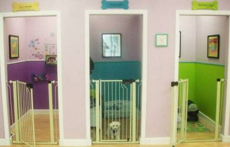
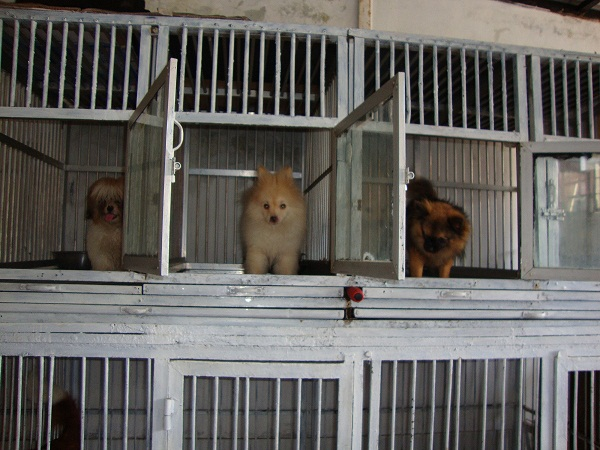

Titipin Yuk Disini
Prosedur Penitipan
Kami memiliki prosedur dan persyaratan sebelum
anjing Anda dititipkan di tempat kami.
Berikut prosedur dan persyaratannya :
-
Customer yang sudah menghubungi melalui
telepon / BBM / WhatsApp atau social media lainnya,
akan diproses untuk ditanyakan:
-
Data Diri Anda dan Anjing Anda
-
Jenis anjing & bobot anjing (Harga Penitipan akan disesuaikan
dengan bobot anjing Anda).
Kami akan menanyakan bobot anjing Anda
terlebih dahulu sebelum dititipkan karena harga penitipan nantinya
akan disesuaikan dengan berat badan / bobot dari anjing Anda.
-
Kelengkapan vaksinasi anjing sesuai umur.
Vaksinasi lengkap adalah salah satu persyaratan utama.
Buku vaksinasi dapat Anda kirimkan melalui email kami
di mail@titipinyuk.com / WhatsApp kami :
0896 9160 8469.
-
Kesehatan anjing adalah salah satu persyaratan utama.
Anjing yang dititipkan harus dalam keadaan sehat, bebas dari kutu/penyakit.
Apabila ada anjing Anda yang membutuhkan special treatment / treatment khusus
(contoh: takut dengan suara petasan) mohon diinfokan kepada kami di awal.
-
Setelah melalui proses pengecekan, prosedur selanjutnya adalah
kami membutuhkan informasi:
-
Rencana Tanggal Penitipan
-
Lama Penitipan
-
Kebiasaan Anjing anda
-
Berikut beberapa ruangan penitipan yang kami miliki :
-

-

-
